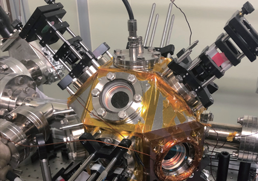

Report by Subjects
Report by Subjects
KAIST RESEARCH ACHIEVEMENTS
Rydberg-atom Quantum Simulator Development
Department of Physics Jaewook Ahn / Heung-Sun Sim
Summary
Quantum computing has emerged as one of the most important future technologies. Recently, KAIST physicists developed a 25-qubit quantum simulator (an early version of a quantum computer), with neutral atoms entangled through Rydberg-atom excitation. This Rydberg-atom quantum simulator was used for an old physics problem, known as quantum Ising Hamiltonian, and revealed the thermalization dynamics of this massively entangled many-body system. This system is not yet a universal quantum computer as it is not fully programmable, but it is capable of solving certain physics problems.
Background
General interest in quantum computing has gradually increased in recent years. A quantum computer is a mechanical device that directly uses quantum mechanical phenomena such as superposition, entanglement, and non-locality for information computation. Quantum computers are expected to perform computations that cannot be handled in principle by digital computers. The core technology in quantum computation involves programming the interaction between particles storing a quantum bit (qubit), which is the quantum mechanical information unit, through thorough isolation from external noises. To date, physical systems that are able to implement this technology include ion traps and superconductor circuits. A quantum computer that can arbitrarily program approximately 50 qubit particles is expected to outperform the performance of digital computers. However, despite recent rapid advances, existing quantum computers are only able to operate up to about 20 qubits.
In 2016, KAIST researchers developed a new neutral-atom arrangement technique using optical tweezer traps. This year, the same team, in collaboration with theorists, developed a Rydberg-atom quantum simulator (as an early-development stage quantum computer, it has very limited programming capability). This machine is an experimental device that arranges neutral atoms, cooled in high vacuum to a cryogenic temperature, into arbitrary micrometer-sized structures, which then form Rydberg atoms (micrometer-sized atomic states) in order to achieve multi-atom quantum entanglements. The device consists of an atom cooling and trapping apparatus, optical tweezers, an optical delivery system, a single-atom resolving microscope, and an ultra-high performance analysis device. To date, this machine can implement quantum entanglements of about 40 qubits and analyze their dynamic states up to about 25 qubits. Although programming capability is still limited, Hamiltonians of certain important physical problems can be operated.
 Fig. 1. Rydberg-atom quantum simulator
The following is the first experimental result obtained from the quantum simulator. The dynamics of quantum-Ising Hamiltonian were studied, as the quantum simulator evolved to a steady state. It was noted that a rubidium single-atom could mimic the characteristics of a spin-1/2 particle. A quantum-Ising model (or transverse-field Ising model) was implemented with nearest neighbor inter-atomic interactions, or up to the next nearest neighbor interactions, while the atoms were arranged in a zigzag arrangement with an arbitrary angle. Analysis of the probability distributions of the entire Hilbert space showed that the spin dynamics converged from the first coherent oscillation to the theoretically predicted equilibrium state, and the converging behavior satisfied the detailed balance conditions of the thermalization process. This result implicates that the KAIST experiment demonstrated the existence of a certain quantum spin system thermalization that can correspond to a statistical mechanical thermalization process that is based on diffusion.
Expected effect
A quantum simulator is a quantum computer in early stages of development, and can potentially have important roles in relevant research and also in developing the technology for quantum computer development. As of today, three institutions, KAIST, Harvard University, and the Institute of Optics in France, operate Rydberg-atom quantum simulators. Although such machines have significantly lower gate operation fidelities compared to other quantum computer competition models (ion traps and superconductor circuits), Rydberg quantum simulators have an advantage in qubit-number scaling. It is expected to be soon possible to realize quantum entanglements of approximately 50 qubits in Rydberg systems, which can be applied to various quantum many-body problems that are recently emerging with great importance in physics.
Research Outcomes
[Paper 1] Hyosub Kim, Yeje Park, Kyungtae Kim, H.-S. Sim, and Jaewook Ahn, “Detailed balance of thermalization dynamics in Rydberg atom quantum simulators,” Physical Review Letters 120, 180502 (2018).
[Paper 2] Woojun Lee, Hyosub Kim, and Jaewook Ahn, “Defect-free atomic array formation using the Hungarian matching algorithm,” Physical Review A 95, 053424 (2017).
[Patent] Jaewook Ahn, Hyosub Kim, Woojun Lee, “Dynamic holographic single atom tweezers and tweezing method using thereof,” Korea Patent 1017834040000 (2017-09-25).